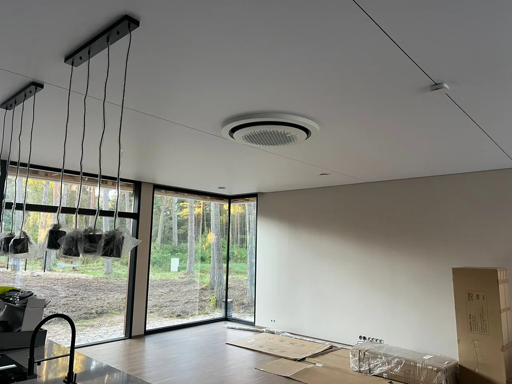

Parketi paigaldus Tallinnas korteris
Uus põrand muudab kogu ruumi ilmet, kuid hea tulemus algab juba enne esimese parketilaua paigaldamist.

Milline oli töö?
Korteri põrand vajas uuendamist. Eesmärk oli saada sirge, vaikne ja ülejäänud siseviimistlusega sobiv põrand, mis peaks hästi vastu igapäevasele kasutusele.
Enne töö alustamist vaatasime üle aluspõranda, uste kõrgused ja ühenduskohad teiste põrandakatetega. Samuti leppisime kokku parketi paigaldussuuna. Need otsused mõjutavad nii põranda välimust kui ka seda, kui palju on vaja teha lõikeid ja üleminekuid.
Kuidas töö käis?
- Kontrollisime aluspõrandat. Parketi all olev pind peab olema puhas, kuiv, stabiilne ja piisavalt tasane. Ebatasane või liikuv aluspõrand võib panna uue põranda nagisema või kahjustada laudade ühendusi.
- Planeerisime paigalduse. Valisime ruumiga sobiva laudade suuna ning vaatasime läbi ukseavad, seinte ääred ja üleminekud teistesse ruumidesse.
- Paigaldasime parketi. Seinte ja teiste takistuste äärde jätsime vajalikud paisumisvuugid, et põrand saaks temperatuuri ja õhuniiskuse muutudes loomulikult liikuda.
- Viimistlesime põranda. Paigaldasime liistud, kontrollisime uste liikumist ja üleminekuid ning koristasime tööala.
Tulemus
Valmis sai ühtlane ja rahuliku ilmega põrand. Liistud ja üleminekud sobituvad ruumiga, uksed liiguvad vabalt ning põrand ei nagise ega liigu kõndides.
Korraliku tulemuse juures on oluline tervik: hea parkett ei korva ebatasast aluspinda ning täpselt paigaldatud lauad vajavad ka korralikult viimistletud ääri.
Kas soovid oma korterisse uut põrandat?
Esmase hinnangu saamiseks saada meile ruumi pindala või mõõdud, fotod olemasolevast põrandast, objekti asukoht ja soovitud põrandamaterjal. Lisa ka info selle kohta, kas vana põrand tuleb eemaldada ning kas vajad uusi liiste.
Kui fotodest ei piisa, lepime kokku objekti ülevaatuse. Enne töö alustamist saad selge pakkumise ja tööde ajakava. Tehtud ehitus- ja viimistlustöödele kehtib 3-aastane garantii.
Üksikud täkked ei vaja alati uut põrandat
Kui põrand on muidu heas seisukorras, kuid sellel on üksikud täkked või sügavamad kriimustused, võib piisata kohalikust parandusest. Vaata lähemalt parketi täkete parandamist kuumvahaga.
Korduma kippuvad küsimused
Millal on õige aeg parkett korteris paigaldada?
Parkett paigaldatakse tavaliselt pärast tolmuseid ja niiskeid ehitustöid ning enne lõplikku mööbli paigutamist. Kui seinad vajavad pahteldust või värvimist, tasub tööjärjekord enne kokku leppida.
Miks on aluspinna kontroll parketi paigaldusel oluline?
Ebatasane, niiske või liikuv aluspind võib põhjustada naginat, parketi ühenduste avanemist ja ebaühtlast lõpptulemust. Aluspinna kontroll aitab otsustada, kas enne paigaldust on vaja tasandust või parandusi.
Kas vana põrand tuleb alati eemaldada?
Mitte alati. See sõltub vana katte seisukorrast, kõrgusest ja stabiilsusest. Kui vana põrand liigub, kriuksub või selle all on niiskusprobleem, tuleb põhjus enne uue parketi paigaldamist lahendada.
Kas paigaldate ka põrandaliistud?
Jah. Vajadusel paigaldame nii põrandaliistud kui ka üleminekuliistud.